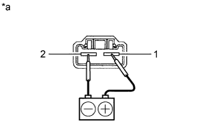

FUEL PUMP > INSPECTION |
| 1. INSPECT FUEL PUMP |
Inspect the resistance of the fuel pump.
Measure the resistance according to the value(s) in the table below.
| Tester Connection | Condition | Specified Condition |
| 1 - 2 | 20°C (68°F) | 0.2 to 3.0 Ω |
|  |
Inspect the operation of the fuel pump.
Connect the positive (+) lead of the battery to terminal 1 of the connector and the negative (-) lead to terminal 2. Check that the fuel pump operates.
| *a | Component without harness connected (Fuel Pump) |